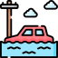
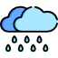

Bem-vindo à A.R.C.A.
A.R.C.A. (Alerta de Risco Climático e Apoio) é um aplicativo inteligente que oferece suporte preventivo e emergencial em situações climáticas extremas como alagamentos, enchentes, ventos fortes e ondas de calor. Nossa missão é proteger vidas com informação, orientação e ação rápida.
A importância de estar preparado
Mudanças climáticas e eventos extremos estão se tornando parte da nossa realidade. Muitas vezes, os
riscos não dão aviso prévio. Por isso, cultivar o hábito de se informar, planejar rotas seguras,
conhecer os sinais de alerta e saber como agir é uma atitude que pode salvar vidas.
Estar preparado não é exagero — é responsabilidade. Cada ação preventiva é um passo rumo a uma
comunidade mais segura, consciente e resiliente.
Para saber mais sobre como se proteger em diferentes situações, clique nos cards abaixo.
Eles contêm orientações específicas sobre desastres como alagamentos, enchentes, ventos fortes e calor
extremo.

 Alagamentos: Saiba como se Proteger
 O que são alagamentos?
O que são alagamentos?
Alagamentos acontecem quando o acúmulo de água das chuvas não escoa adequadamente, provocando a inundação temporária de ruas, calçadas e até imóveis. Geralmente são causados por:
-
Chuvas fortes em curto espaço de tempo
-
Obstrução de bueiros ou galerias pluviais
-
Impermeabilização do solo nas cidades (asfalto, concreto)
-
Má conservação das redes de drenagem
Principais Riscos
-
Afogamentos em ruas encobertas por água
-
Contato com água contaminada (esgoto, lixo, produtos químicos)
-
Choques elétricos e quedas de energia
-
Danos a veículos e residências
-
Interrupção de serviços como transporte e coleta de lixo
-
Doenças de veiculação hídrica, como leptospirose e hepatite A
Antes do Alagamento: Como se Prevenir
-
Instale válvulas de retenção em ralos e vasos sanitários para evitar o refluxo de esgoto
-
Eleve eletrodomésticos e móveis em áreas propensas a alagamento
-
Utilize barreiras de contenção (sacarias de areia ou placas plásticas) em portas e garagens
-
Mantenha documentos e objetos importantes em locais altos e protegidos
-
Nunca descarte lixo ou entulho em ruas, calçadas ou bueiros
-
Participe de mutirões de limpeza comunitária
-
Comunique obstruções ou buracos à prefeitura/local responsável
 Durante o Alagamento: Como Agir
Se estiver em casa:-
Desligue o quadro de energia e feche o registro de gás
-
Suba para andares superiores ou lugares elevados
-
Evite contato com a água (risco de infecção, choque, objetos cortantes)
-
Não tente atravessar alagamentos, mesmo que pareçam rasos
-
Mantenha-se longe de postes, árvores e fios expostos
-
Se estiver de carro, não insista em atravessar ruas com água acumulada
Após o Alagamento
-
Aguarde a liberação das autoridades antes de retornar ao local
-
Utilize botas, luvas e máscaras para fazer a limpeza
-
Descarte objetos e alimentos contaminados pela água
-
Ferva a água para consumo ou use cloro conforme orientação sanitária
-
Documente perdas e entre em contato com a Defesa Civil (199) ou órgão municipal
Enchentes: Saiba como se Proteger
O que são Enchentes?
Enchentes ocorrem quando o volume de água sobe acima do nível normal, invadindo ruas, casas, terrenos e prejudicando o deslocamento e a segurança das pessoas. Costumam ser causadas por:
-
Chuvas intensas contínuas
-
Entupimento de bueiros e drenagens
-
Transbordamento de rios e córregos
Principais Riscos
-
Afogamento
-
Doenças infecciosas (leptospirose, hepatite A, diarreias)
-
Perda de bens materiais
-
Contaminação da água potável
-
Riscos elétricos (choques, curtos)
-
Interrupção de serviços públicos (energia, transporte, saúde)
Antes da Enchente: Como se Prevenir
-
Eleve móveis e eletrodomésticos em locais propensos a alagamento.
-
Guarde documentos em sacos plásticos e lugares altos.
-
Verifique e limpe calhas, ralos, bueiros próximos e caixas d'água.
-
Não jogue lixo nas ruas ou bueiros.
-
Organize mutirões de limpeza e comunicação com a prefeitura.
-
Acompanhe previsões climáticas e alertas da Defesa Civil.
Durante a Enchente: Como Agir
-
Desligue a energia elétrica e o gás, se houver risco de alagamento.
-
Suba para andares superiores ou pontos altos.
-
Evite contato com a água da enchente (pode estar contaminada).
-
Evite áreas alagadas – apenas 30 cm de água podem arrastar um carro.
-
Não caminhe em correntezas ou tente atravessar.
-
Se estiver em veículo, pare em local seguro e espere a água baixar.
Após a Enchente
-
Evite retornar até que as autoridades deem o sinal de segurança.
-
Use botas e luvas ao limpar a casa.
-
Jogue fora alimentos e objetos que tiveram contato com a água suja.
-
Ferva a água antes de beber e desinfete ambientes.
-
Denuncie danos à Defesa Civil e registre perdas.